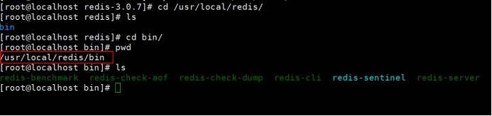
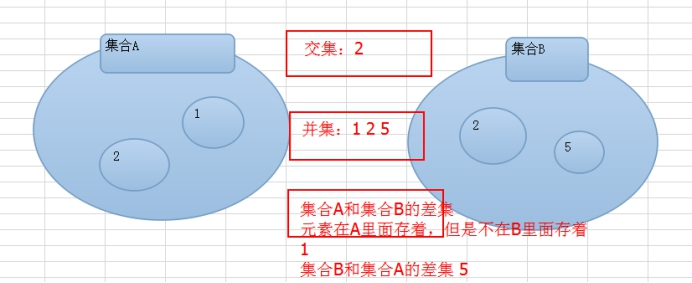
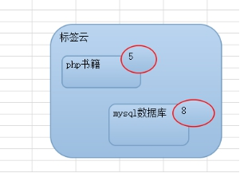
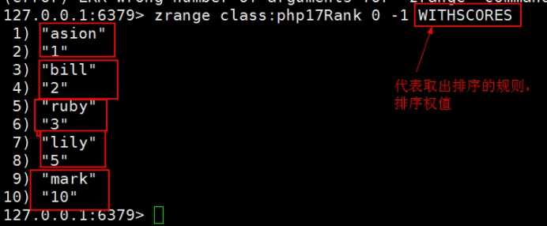
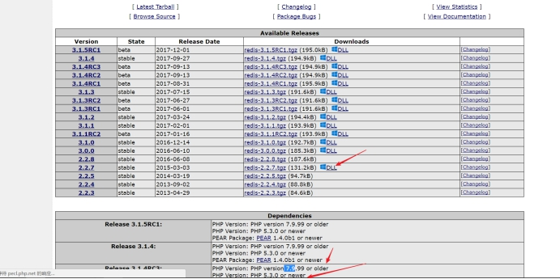
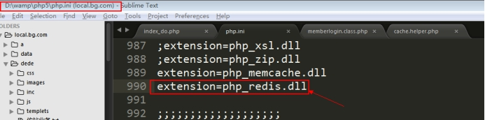
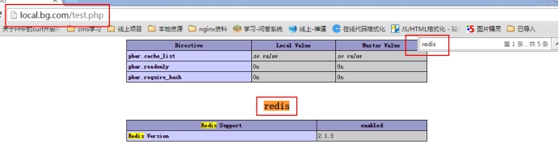
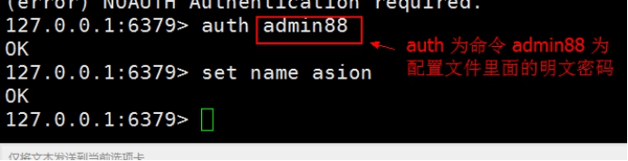
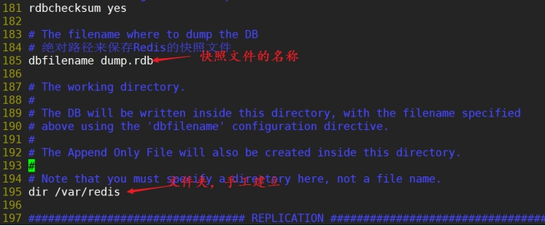

NoSql之Redis数据库
之前学习了memcache，一个缓存系统，在实际的使用中，Redis也是一个不错的nosql数据库（因为它的存储的value类型很多，并且功能也会memcache多很多）
Redis简介
Redis是Remote Dictionary Server(远程数据服务)的缩写，它是NoSql中一款非常出色的产品，由意大利人 antirez(Salvatore Sanfilippo) 开发的一款内存高速缓存数据库同时支持持久化设置。该软件使用C语言编写，它的存储格式也是key-value然而它支持丰富的数据结构，具体一共有==5==种数据类型。
String（字符串类型）
list（链表）
hash（哈希表类型 映射 map）
set（无序的集合: 1. 无序性 2. 唯一性 3. 确定性）
sorted set(有序集合、orderset、缩写为zset)（1. 有序性，存在一个排序的法则（数字 0-9 字母表 a-z I II III xI…. ） 2. 唯一性 3. 确定性）
==注意==：上面我们说的value的数据类型，其实在底层都是一个字符串，只是这些字符串满足一种认为的特定格式，所有才有了这么多数据类型。
而且redis通过简单的配置把数据从内存保存到硬盘当中进行持久保存。Redis为高并发而生，是NoSql中的佼佼者。后起的nosql都是为了解决互联网上的高并发的问题。
常见的nosql产品
网站：http://www.nosql-database.org/
常见nosql的比较
注意：key-value 底层的保存都是使用hash结构，特点就是时间复杂度为o(1)：随着数量的增加，在100w条里面查询一条记录和在1000w里面的时间数量级是一样的。
Redis和Memcache
memcache不支持数据持久化，软件运行和安装都较小。Memcache是纯内存存储的数据库，单个key的value值只能保存1M的数据，默认最大的内存存储量是64M（-m 选项），Memcache具有分布式的算法功能（取模）。
redis 支持==数据持久化==和==内存存储==两种方式，软件运行比memcache大一点，可以设置缓存时间，redis集群是一个主从模式的，主服务器可用来读写，从服务器只能用来读。redis没有内置的分布式算法功能。Redis单个key的value可以存储的最大空间为1G，而总存储容量可以视硬盘的大小而定。
在PHP的官方当中Memcache具有Memcache类和Memcached类。而Redis(纯个人开发的产品)没有PHP官方的支持，Redis的PHP扩展是其开发作者编写的。
==Redis的安装和使用==
Redis的安装操作系统和端口说明
redis是一款开源产品，主要开发平台为linux，所以原生的代码在linux下运行是最好的。
redis作者不愿意开发windows版本下的redis。微软技术小组，在redis源码的基础上，进行了开发windows版的redis，主要提供给ASP.NET使用，所以你也可以安装windows版本的redis程序。在本阶段当中，我们主要学习redis在Linux下的应用为主。
Redis默认使用的是6379端口，对一些众所周知的服务的端口一般我们不建议修改。
- http 80
- https 443
- memcache 11211
- redis 6379
- mysql 3306
- smtp 25
- ipop3 110 (先发后收，从小到大)
- sshd 22
- ftpd 20、21
- mongodb xxx
- sphinx xxx
6379端口由来：redis作者为了追求一个女星，专门写了一个redis之后把端口命名为她的名字merz(九格宫键盘)。
http://www.zhihu.com/question/20084750

Windows下安装
- 复制软件

- 在cmd里面启动服务（需要超级管理员的身份启动）

- redis目录结构

- 启动redis服务
如果要终止，则使用 ctrl + c即可。
Linux下Redis安装
这个需要做源码的编译，下去可以百度一下 yum的安装，就是输入一条命令的事。
- 上传源代码

- 解压redis的源码包

- 进入解压后的目录，然后进行
make（redis安装不需要configure的过程）
- 指定安装路径，进行安装
make PREFIX=/usr/local/redis install（PREFIX必须大写）
- 建立redis的配置文件目录和配置文件的副本

- 成功安装后的目录结构

linux下redis服务的启动
- 修改Redis的配置文件，将daemon改为yes


- 启动服务（跟随配置文件）

- 使用客户端操作
注意：如果要终止则按ctrl+c
- 关闭，在命令行输入
shutdown

- 如果停止不了，则采取杀死进程的方式
==Redis的数据类型==（重要）
需要注意：Redis是一个c/s的架构，在使用之前，必须确保服务器端是开启的，同时Redis也是一个key-value型的nosql的数据库。并且其value值的类型有如下的几种：

string类型
set 设置值
语法：
set key value

- get 获取值

- incr 自增，默认自增1 $i++，注意：value的值必须是整数，还有如果key不存在则从0开始


- decr 自减 默认是-1 $i–，值的类型必须是整数；如果key不存在默认是0

注意：可以使用tab键进行命令的补齐，也可以使用上下键来执行之前的命令。
- incrby 指定自增的数字（步长）
- decrby 指定自减的数字

一般来说是有key-value数据库最重要的就是key的设计。
==如何设计redis下的key？==
例如在mysql里面设计一张user表：
| id | name | password | sex | |
|---|---|---|---|---|
| 1 | asion | admin88 | gogery@163.com | m |
| 4 | ruby | admin | ruby@sina.com | f |
注意：memcache的可以直接md5编码一下即可。 md5(key) ==> value
如果要把上面的user表转换成redis里面的key-value来保存，该如何设计key？
答：分如下几部
把mysql里面的==表名称==换成redis里面key的前缀 user:
把mysql里面的表的==主键字段名称==换成后缀的第二个字符 user： :id:
把对应记录的主键id==记录==换成key的第三个部分 user：:id:: 1:
把mysql里面==其他所需的字段名==换成key的第四个部分 user：:id::1:name
保存邮箱的key：user：:id::1:email
对应上面mysql表里面的数据，该这样保持在redis里面：

取出数据：

取id为1的用户名
hash类型
redis里面value的hash类型完全和php里面的关联数组一样。 和js里面的对象也是一样。
1 | //php |
- hset 设置hash的单个值

- hget 获取某个值

- hmset 设置hash的多个值

- hgetall 获取整个key的hash值
link链表类型（队列栈）
链表 可以从头部或者是尾部都可以存放数据
- lpush 向链表的头部【左侧】压入数据 L 的小写

- rpush 向链表的尾部【右侧】压入数据
实际使用：后台统计一下最近登录的10个用户
select * from user order by logintime desc limit 10;
换成redis的链表来实现的话，只需要设置一个链表，然后往链表的左侧压入10个username即可；如果10个满了，在链表右侧弹出一个值即可。

- lrange 获取链表里面所有的元素

- lpop 删除链表里面头部的第一个元素，并返回该元素

- rpop删除链表里面尾部的最后一个元素，并返回该元素

set类型
集合分为两类：
无序集合
有序集合
一般来说我们口头上说的集合基本都是指的是无序即可。
集合：
无序性， 元素的位置没有讲究
唯一性， 里面的元素不能重复
确定性， 元素的个数是确定的
交集：A∩B === B∩A
并集：A∪B === B∪A
差集：A-B !=== B - A
差集定义：A-B 元素在A存在但是在B里面不存在。B-A元素在B里面存在，但是不在A存在
- sadd 向集合里面添加元素，并查看
案例 ：来完成集合的交集、并集、差集

使用的场合，如豆瓣里面的==书签系统==。

集合实际使用的场合主要是==好友推荐，共同好友==。可能认识的人。
orderset类型
orderset是set的一个升级版本【也叫作sortset】，意大利文叫zset，在set的基础上增加了一个顺序属性（权值1 2 3），这一属性在添加修改元素的时候可以指定，每次指定后，zset会自动重新按新的值调整顺序。有序列表值完成的是集合元素排序的功能。
有序集合里面的元素是有序的，并且也是唯一的，也是确定的。

- zadd 添加有序集合
- zrange 获取有序集合里面的元素

zrange key 0 -1 WITHSCORES获取权值

实际应用场景：==最近最活跃的的前10个用户==。
最活跃：在有序集合里面权重最大。
如果现在这个场景使用mysql实现
| id | name | passwd | lgtime | lgnumber |
|---|---|---|---|---|
| 1 | asion | admin88 | 1234223 | 1 |
| 4 | bill | admin88 | 53214 | 8 |
主要用户每登录一次，这个lgnumber 字段的次数就要+1；到时候可以统计登录次数最多的10个用户
select * from user order by lgnumber desc limit 10;
==php操作Redis==（重要）
通过上面的基本命令可以操作Redis后，一般来说我们都是编程语言进行操作，所以我们需要开启PHP操作Redis的扩展。

http://www.runoob.com/redis/redis-tutorial.html
Windows下实现
window下php操作redis扩展，前往该网站，搜索自己需要的PHP扩展
- 选择合适的版本【注意：这里需要根据phpinfo函数的信息进行选择】

- 点击上面的 【dll】链接后，选择合适的版本

- phpinfo函数的信息
到pecl网站下载合适的版本

- 复制合适的扩展文件到php的ext目录
- 修改php.ini文件，如果不存在则增加，存在则去除前面的分号

- 重启集成开发环境

- 浏览器访问

Windows下简单操作
- 在网站根目录编写如下代码
- 浏览器访问即可
- php操作redis手册

linux-开启PHP操作Redis的扩展
==装扩展的的步骤==
上传到
/usr/local/src解压
tar -zxvf扩展包.tar.gzcd到解压目录执行一个
/usr/local/php/bin/phpize执行这个生成一个 configure 文件（收集操作系统信息）./configure --with-php-config=/usr/local/php/bin/php-config，收集操作系统信息，使用
make && make install生成一个 扩展.so文件修改php.ini，加上 extension= 上一步 扩展.so 文件
重启 php-fpm
使用 phpinfo() 函数查看
- 上传源码包，并复制到
/usr/local/src目录
- 解压，并进入解压后的目录，并使用/usr/local/php/bin/phpize 生成文件

- 使用
./configure --with-php-config=/usr/local/php/bin/php-config来收集操作系统信息
- 编译和安装

注意使用的编译和安装后会生产一个目录，目录下有一个NAME.so文件

- 修改php.ini文件
增加如下内容

- 重启Apache，并添加一个index.php测试文件
- 浏览器访问这个测试文件

- 在网站根目录编写如下代码

- 浏览器访问

redis的一些小命令
1.keys *看所有的key【* 通配符，表示任意的字符】

del 删除key（成功返回1 不成功返回0）

3.exists检测key是否存在（存在返回1 不存在返回0）
type查看value的类型
flushdb清空当前数据库所有的key，只在测试的时候使用，==线上千万不要使用==。

注意：
Redis下是存在数据库的概念，默认是存在16个数据库，每个数据库下我们可以保存属于自己的key-value的值。flushdb只是清空当前数据库的key。如果要清空所有的使用flushall。
Redis里面的 数据库可以认为是 key的一个集合。
select Number切换数据库。redis默认是有16个数据库（下标从0开始），但是这个不怎么使用。
flushall清除所有数据库的key，千万==慎用==

dbsize查看当前数据库的key的个数
redis安全认证
在默认的情况下redis不需要任何密码就可以登录，为了设置客户端连接后进行任何其他操作前需要使用的密码，我们使用Redis的安全认证，然而这个安全认证的密码是明文的。
注意：memcache是没有权限机制，Redis是存在密码操作。后面的mongodb里面定义类似一套rbac（基于角色的权限管理）的机制。
- 开启
重启redis的服务即可

- 登录测试

解决：

还一种方案在登录的时候加参数-a admin88

==redis的持久化==（重要）
简介
注意：我们在使用Redis的时候，Redis里面的存储的数据是保存在内存里面，但是Redis提供了持久化的机制，可以将内存里面的数据持久保存在硬盘。
我们在使用数据的时候，其实是操作的内存，但是通过一定方式将内存的数据保存在磁盘。如果要实现持久化，则有两种方式可以实现：
- 基于==快照==的方式，将内存的数据直接一次性的快照到磁盘上面，相对对系统的开销很大。
- 基于==文件追加==的方式，定期把内存里面的数据追加到一个文本文件里面。
在redis当中，redis开发设计两种持久化的模式，如下：
Redis的快照模式，默认安装完成就会自动开启的持久化模式，可以通过查看redis命令的目录下的的快照文件dump.rdb。
vim /etc/redis/redis.conf

dump.rdb文件就是redis的快照文件，它保存了redis所有的数据信息和记录，如果当网站数据量变大，该文件也会随之增大，操作效率很低。因此我们有必要去把该模式改为 aof 持久化模式【append of file文件追加模式】。
Redis中的Aof模式：Redis的aof文件有点类似mysql的binlog日志【读写分离的时候】，该文件把用户的操作记录包括查询的过程全部记录，当服务器出现问题的时候，那么redis会将数据从内存中保存到aof文件当中，当服务器重新运行时那么aof就会根据操作的记录把数据重新还原到Redis的内存当中过去，以却保数据的完整性。我们作为应用者，只需要了解aof的持久化模式是记录用户的操作而非实时数据记录就可以了，然后我们需要知道如何开启aof持久化模式。
==快照模式和aof模式是完全互斥的。==
如果aof的模式一旦启动，那么快照就会失效，redis就会把所有的数据缓存到内存当中，如果你发生重启，停止，关闭服务器等行为，那么aof文件就会把内存中数据同步到硬盘中。
快照模式
- 开启
save 900 1表示的含义：如果在900s或者900s以上有1次对key的操作则把内存数据持久化到磁盘上
save 300 10 表示的含义：如果在300s或者300s以上有10次对key的操作则把内存数据持久化到磁盘上
save 60 10000表示的含义：如果在60s或者60s以上有10000次对key的操作则把内存数据持久化到磁盘上
如果忘记了，则查看即可

测试
可以使用
bgsave background save快速的把内存数据持久化到磁盘上。

aof 模式
aof【append fo file】，和快照是互斥。
- 修改
/etc/redis/redis.conf配置文件
- 设置持久化数据的频率

appendfsync always 的选项表示redis的命令每一次只要运行那么就会马上写入aof操作文件当中，该选项是最没有效率的，然后它却是最具备操作记录完整性的。
appendfsync everysec 的选项是redis比较==折中==的选项，表示每一秒中只要有操作那么就会进行操作记录，但是如果在某一秒当中redis发生故障，那么这一秒的数据操作记录将有可能发生丢失的情况，存在一定的风险，然而这个配置的性能比较适合中，所以建议使用，因为redis一秒中内可以写81000次/s所以虽然存在一定的风险，但只要不要把一些非常重要的敏感数据至于redis当中，那么就不需要过分担心这个问题。
appendfsync no 该配置的效率完全依赖您当前所在使用的操作系统和计算机的性能，即，系统空闲时才写入。如果操作系统稳定，计算机的性能强大，那么这一项是最有效率的，反而就是最差，所以一般最好不要设置该项。